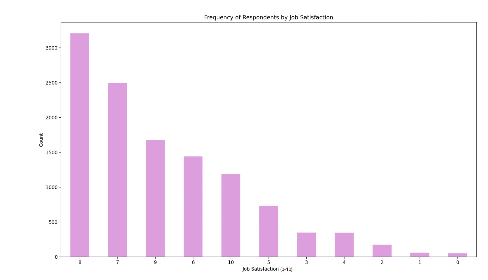
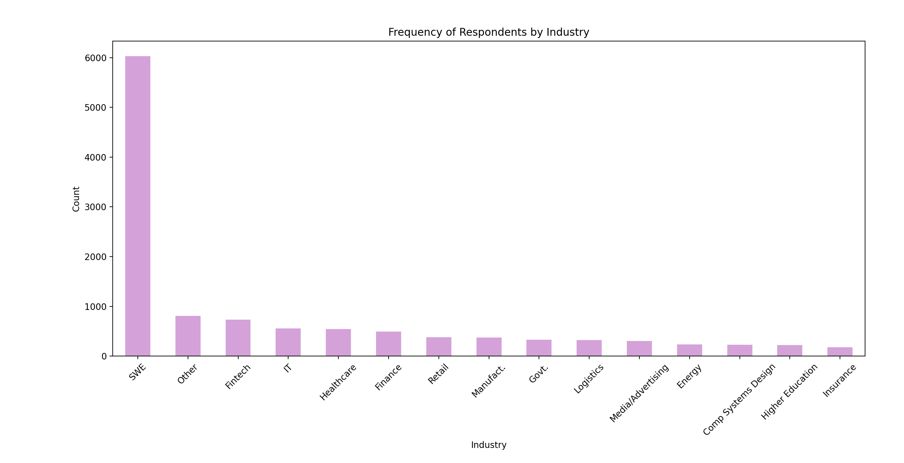

Exploratory Data Analysis: Developer Statistics
Data Background, Purpose, and Biases
The raw data used in this analysis derives from a Stack Overflow Developer survey completed
in 2025. It measures multiple variables of over 49,000 developers such as converted salary, age group,
highest education level and more. The raw data can be found here.
The data captures an overview of the experiences of developers in 2025 across many circumstances.
Some of the biases present in the data are inaccurate/incomplete values entered and participant bias.
Elaborating on these biases, for some entries in the raw data, inaccurate values were entered such as
when it came to asking how many years the individual had been coding for, some participants responded with
"100." As for participant bias, some individuals who took the survey may have responded in a way that fits
the expectations of the surveyor.
Summary Statistics and Visualizations
Visual 1, Quantitative: Salary

Summary Statistics:
- Count: 11726.000000
- Mean: 93578.011513
- Std: 70040.975205
- Min: 65.000000
- 25%: 44086.000000
- 50%: 81210.000000
- 75%: 127616.000000/li>
- Max: 440856.000000
This visualization shows the distribution of salary in USD across different quartiles. The total number of non-null entries or count is 11,726. The average (mean) salary is $93,578.01. The standard deviation is $70,040.98, demonstrating a wide range of salaries. The minimum salary is $65,000, and the first quartile is $44,086 meaning that 25% of the respondents earn $44,086 or lower. The second quartile is $81,210 meaning that 50% or half of the respondents earn $81,210 or lower. The third quartile is $127,616 meaning that 75% of the respondents earn $127,616 or lower. The maximum salary earned is $440,856.
Visual 2, Quantitative: Years of Coding Experience

Summary Statistics:
- Count: 11726.000000
- Mean: 17.814429
- Std: 9.992151
- Min: 1.000000
- 25%: 10.000000
- 50%: 15.000000
- 75%: 25.000000
- Max: 46.000000
This visualization shows the distribution of coding experience in years. The total number of non-null entries or count is 11,726. The average (mean) coding experience is 17.81 years. The standard deviation is 10 years, demonstrating a relatively wide range of coding experience. The minimum years of experience is 1. 25% of respondents have 10 years of coding experience or less. 50% of respondents have 15 years of coding experience or less, and 75% have 25 years of coding experience or less. The maximum years of coding experience recorded is 46 years.
Visual 3, Ordinal: Education Level

Summary Statistics:
- Count: 11,726
- Unique: 8
- Top: Bachelor’s degree (B.A., B.S., B.Eng., etc.)
- Freq: 5,305
This visualization shows the frequency of respondents by highest education level obtained. The total number of non-null entries or count is 11,726. There are 8 unique categories corresponding to the different education levels. A bachelor's degree had the highest frequency at 5,305.
Visual 4, Ordinal: Job Satisfaction
Summary Statistics:
- Count: 11726.000000
- Mean: 7.269145
- Std: 1.891978
- Min: 0.000000
- 25%: 6.000000
- 50%: 8.000000
- 75%: 8.000000
- Max: 10.000000
This visualization shows the frequency of respondents by job satisfaction from 0-10 in which 0 is the lowest and 10 is the highest. The total number of non-null entries or count is 11,726. The average (mean) job satisfaction is 7.27. The standard deviation is 1.90, demonstrating a small deviation from the average. The minimum job satisfaction is 0. 25% of respondents recorded a job satisfaction level of 6 or less. 50% of respondents recorded a job satisfaction level of 8 or less, and 75% recorded a job satisfaction level of 8 or less. The maximum job satisfaction level was 10.
Visual 5, Categorical: Industry
Summary Statistics:
- Count: 11,726
- Unique: 15
- Top: Software Development
- Freq: 6,033
This visualization shows the frequency of respondents by the industry they are currently working in. The total number of non-null entries or count is 11,726. There are 15 unique categories corresponding to the different industries. Software development had the highest frequency at 6,033.
Visual 6, Categorical: AI as a Threat to Career

Summary Statistics:
- Count: 11,726
- Unique: 3
- Top: No
- Freq: 450
This visualization shows the frequency of respondents by their view of AI as a threat to their career. The total number of non-null entries or count is 11,726. There are 3 unique categories corresponding to the responses "Yes", "Not Sure", and "No." The response of "No" had the highest frequency at 450.